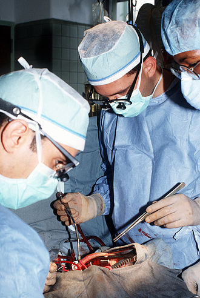
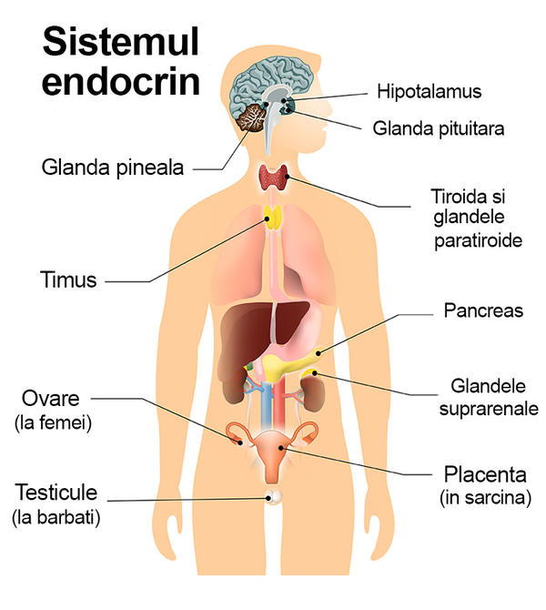
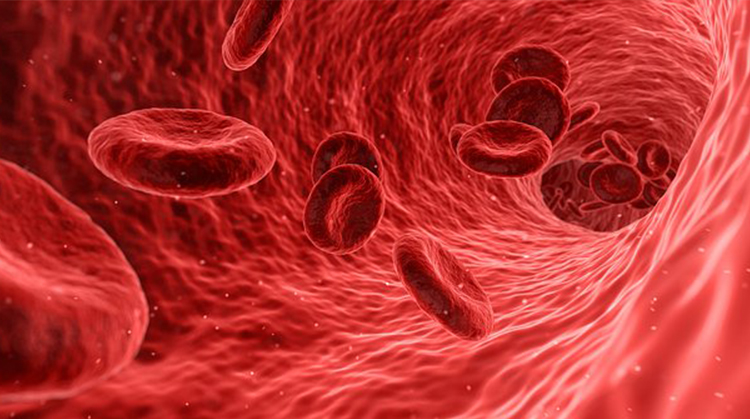
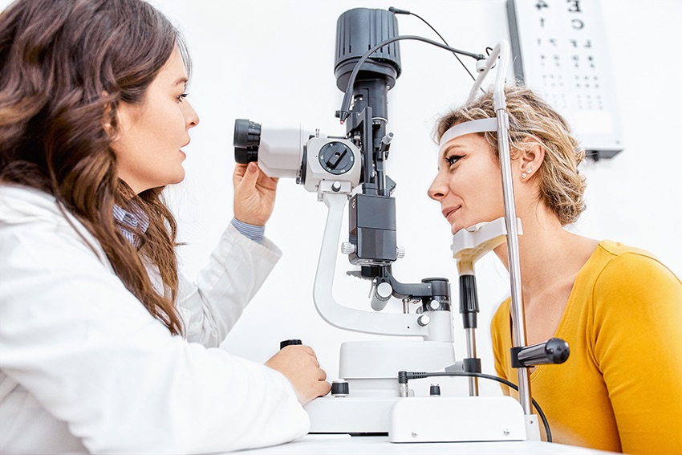
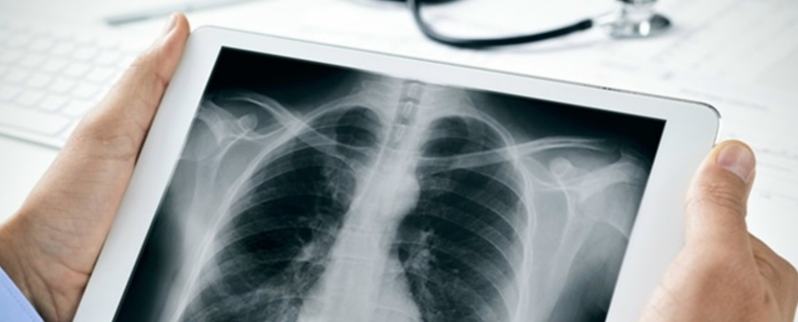

Ce specialitate doriti sa vedeti?
Cardiologie

Cardiologia este o specialitate medicală care are ca subiect de studiu bolile inimii și ale vaselor de sânge.
Cardiologia cuprinde diagnosticul și tratamentul bolilor cardiace congenitale, bolii cardiace ischemice, insuficienței cardiace, valvulopatiilor, aritmiilor și al bolilor pericardului.
Intr-o tara in care bolile cardiovasculare reprezinta principala cauza de deces, vizita la medicul cardiolog este foarte importanta la aparitia oricaror simptome.
Printre cele mai frecvente simptome care ar trebui sa va trimita la cardiolog se numara durerile in piept, palpitatiile, oboseala, slabiciunea, ametelile, tulburarile de ritm cardiac, inflamatiile din zona gleznelor, mainilor si abdomenului.
Totodata, consultul de cardiologie este obligatoriu pentru persoanele care sufera de obezitate, diabet, hipercolesterolemie sau hipertensiune arteriala, intrucat acestea se confrunta cu riscul cel mai crescut pentru aparitia bolilor cardiovasculare.
Oferim si servicii Gratuite daca va prezentati cu bilet de trimitere de la medicul de familie sau specialist.
Vezi medici
Chirurgie

În medicină, chirurgia este specialitatea medicală care tratează bolile sau rănile prin intervenții instrumentale sau manuale operative.
Blocul operator se compune din săli de operație care trebuie să fie cât mai aproape de secția de chirurgie. Aici există anumite circuite în care are acces doar personalul blocului operator și pacienții care necesită intervenția chirurgicală. Intrarea în blocul operator se face numai după ce a fost schimbată ținuta de spital în costumul de filtru, în camera de filtru (alăturată sălii de operație).
În apropierea blocului operator se află secția de reanimare și terapie intensivă, precum și serviciul de transfuzie.
Secția ATI este situată în vecinătatea blocului operator și aici există săli de operație septice și aseptice.
Doctorii efectuează intervenții chirurgicale cu acordul pacientului. Unii pacienți sunt capabili să dea consimțământ mai bine informat decât alții. Populațiile cum ar fi persoanele încarcerate, persoanele care trăiesc cu demență, persoanele incompetente din punct de vedere mental, persoanele supuse coerciției și alte persoane care nu sunt capabile să ia decizii cu aceeași autoritate ca un pacient tipic au nevoi speciale atunci când iau decizii privind asistența medicală personală, interventie chirurgicala.
Vezi medici
Endocrinologie

Endocrinologia este stiinta care studiaza bolile hormonale. Medicul endocrinolog diagnosticheaza si trateaza problemele hormonale si complicatiile acestora. Hormonii regleaza metabolismul, respiratia, cresterea, reproducerea, perceptia senzoriala si miscarea. Dezechilibrele hormonale sunt la baza a numeroase afectiuni.
Daca medicul tau suspicioneaza ca afectiunea ta este legata de productia de hormoni, iti poate recomanda un consult endocrinologic – specialistul in endocrinologie este endocrinologul, care stabileste diagnosticul si schema de tratament a bolilor care afecteaza glandele si hormonii.
Inainte de consult, este util sa notezi orice simptom pe care il ai. Endocrinologul te poate intreba in legatura cu simptome care nu par sa aiba vreo legatura intre ele; asta pentru ca nivelurile hormonale afecteaza atat de multe sisteme din organism, incat modificari minore la nivelul unei glande pot influenta zone din corp foarte indepartate de locul unde este situata respectiva glanda.
Specialistul va masura pulsul si tensiunea arteriala si va analiza starea pielii, a parului, a dintilor si cavitatea bucala. Specialistul poate recomanda efectuarea unor analize de sange si de urina. Dupa stabilirea diagnosticului, medicul endocrinolog va recomanda o schema de tratament, care va depinde de afectiunea preexistenta care a declansat simptomele.
Vezi medici
Hematologie

Hematologia este ramura medicinei interne care se ocupă cu sângele, organele care îl produc și bolile acestuia. Hematologia include studiul etiologiei, diagnosticării, tratării, identificării posibilelor complicații si profilaxiei bolilor sangvine. Medicul de laborator este cel care realizează toate testele necesare studiului sângelui.
Bolile sangvine afectează producerea sângelui și/sau a componentelor acestuia, cum ar fi celulele sangvine (hematii, tromobocite si leucocite), hemoglobina, proteine sangvine(ex. albumine, globuline, TGP, TGO, factori ai coagulării, imunoglobuline, anticorpi, transferina, ceruloplasmina, etc), mecanismele coagularii, etc.
Medicii specializați în hematologie sunt cunoscuți ca hematologi. Munca lor de rutină include îngrijirea și tratamentul pacienților cu boli hematologice. Medicii care lucreză în laboratoare sunt cunoscuți ca medici de laborator. Anatomopatologii sunt cei responsabili de vizualizarea sub microscop a frotiurilor de țesut hematopoietic ( din măduva osoasă / măduva roșie din oasele late - stern, coxal, etc ). Există boli sangvine (ex. leucemie, limfom Hodgkin, mielom multiplu ) ce necesită o strânsă colaborare între hematolog si oncolog.
Diagnosticul hematologic impune o colaborare interdisciplinară şi o strânsă legătură cu laboratorul care realizează testele necesare analizei sângelui. Arcadia asigură servicii de laborator performante şi cu un grad maxim de acurateţe.
Vezi medici
Neurologie

Neurologia este o ramură specială a medicinii care se ocupă cu diagnosticul și tratamentul bolilor organice care afectează sistemul nervos central sau periferic. Structurile organice ce țin de domeniul neurologiei sunt - pe de o parte - creierul, măduva spinării (reprezintă sistemul nervos central), structurile înconjurătoare, precum și vasele sanguine care le hrănesc, - pe de altă parte - nervii cranieni, rădăcinile nervoase și ganglionii spinali, nervii periferici, după ieșirea din canalul spinal, inclusiv legăturile cu mușchii scheletici (reprezintă sistemul nervos periferic).
Printre bolile congenitale există o mare varietate de cauze și manifestări (tulburări metabolice, aberații genetice, traumatisme perinatale etc.). Nou-născuții cu malformații grave ale creierului nu sunt de obicei viabili.
Neurologia a fost considerată mult timp ca o specialitate cu rezultate diagnostice precise, dar cu posibilități terapeutice limitate. Acest fapt s-a modificat în ultimele trei decenii în mod semnificativ.
Unele cazuri de infecții ale sistemului nervos și anexelor sale (encefalite, meningite) sunt tratate de cele mai multe ori în seviciile de boli infecțioase. Herniile de disc intervertebral (cervicale sau lombare) sunt prea adesea diagnosticate și tratate în servicii de ortopedie, un examen neurologic amănunțit este însă absolut necesar pentru a se putea constata deficite funcționale, care impun o cură chirurgicală.
Vezi medici
Oftalmologie

Oftalmologia este o ramură a medicinei care se ocupă cu tratarea bolilor organului vederii, ceea ce include ochiul și structurile din jurul ochiului, cum ar fi pleoapele și sistemul lacrimar. Patologia căilor vizuale (nervul optic, căile vizuale centrale) și a cortexului vizual reprezintă un domeniu de graniță între neurologie și oftalmologie ("neurooftalmologie").
Oftalmologii sunt responsabili pentru diagnosticul, prevenirea și tratamentul aproape tuturor afecțiunilor ochilor și problemelor de vedere.
Majoritatea medicilor oftalmologi pot efectua o gamă largă de proceduri medicale și chirurgicale. Procedurile pe care un oftalmolog le efectuează în mod regulat depind de mai mulți factori, precum specialitatea aleasă. Unele dintre cele mai frecvente proceduri pe care le efectuează un oftalmolog includ diagnosticarea și monitorizarea afecțiunilor ușoare ale ochilor și problemele de vedere.
De la naștere până la adolescență, ochii copiilor cresc și se modifică rapid, de aceea un prim consult oftalmologic este recomandat în primele luni de viață. De asemenea, un consult oftalmologic este necesar și înainte de a începe clasa. Potrivit specialiștilor, adulții fără probleme de vedere ar trebui să-și verifice ochii la fiecare cinci până la 10 ani. Începând cu vârsta de 40 de ani, adulții ar trebui să facă un examen oftalmologic la fiecare doi până la patru ani.
Vezi medici
Psihologie
Psihologia este știința sufletului, a comportamentului uman. Astfel, psihologia este studiul funcțiilor și proceselor mentale, a experiențelor interioare și subiective - precum gândurile, emoțiile, conștiința, motivarea, percepția și personalitatea.
Psihologii adoptă diverse modalități în practica lor. De exemplu, psihologia experimentală folosește metode științifice exacte în a studia cauzele și relațiile reciproce ale proceselor psihice, cum sunt, de exemplu, percepția, învățarea, memoria, motivația, sentimentele, personalitatea, comportamentul social și dezvoltarea psihologică de-a lungul vieții. Psihologia aplicata se ocupa cu formularea unor programe bazate pe aceste studii, pentru a fi aplicate eficient in sfera socială sau tehnică. Psihologia clinică este una dintre disciplinele psihologiei aplicate.
De la înființarea primului laborator experimental de psihologie de către Wilhelm Wundt în 1879 la Universitatea din Lipsca (Leipzig), psihologia s-a separat treptat de filozofie, din care provenea, pentru a deveni o specialitate de sine stătătoare cu o serie de direcții și sub specialități, care dispun doar în parte de un limbaj comun.
Acțiunea coordonată a funcțiilor psihice în procesul învățării precum și în controlul activităților face obiectul psihologiei generale. Sub acest aspect o deosebită semnificație are analiza structurală a cunoașterii, în special structura matematică a proceselor de cunoaștere, așa cum o găsim în formulările fizicii teoretice.
Vezi medici
Radiologie

Radiologia este specialitatea medicală care folosește imagistica medicală pentru a diagnostica și trata bolile din corpul uman și al animalelor.
O varietate de tehnici imagistice, cum ar fi radiografia, ecografia, tomografia computerizată (CT), medicina nucleara inclusiv tomografia cu emisie de pozitroni (PET) si imagistica prin rezonanță magnetică (MRI) sunt folosite pentru a diagnostica sau trata boli. Radiologia intervențională este performanța procedurilor medicale de obicei minim invazive, cu îndrumarea tehnologiilor imagistice, cum ar fi cele menționate mai sus.
Practica modernă a radiologiei implică mai multe profesii diferite de asistență medicală care lucrează în echipă. Radiologul este un medic care a finalizat pregătirea post-universitară adecvată și interpretează imagini medicale, comunică aceste descoperiri altor medici prin intermediul unui raport sau verbal și folosește imagistica pentru a efectua proceduri medicale minim invazive.
În radiografia pe ecran de film, un tub cu raze X generează un fascicul de raze X, care este orientat către pacient. Razele X care trec prin pacient sunt filtrate printr-un dispozitiv numit grilă sau filtru de raze X, pentru a reduce împrăștierea și lovește un film nedevelopat, care este ținut strâns într-un ecran cu atomi de fosfor care emit lumină într-o casetă.
Vezi medici